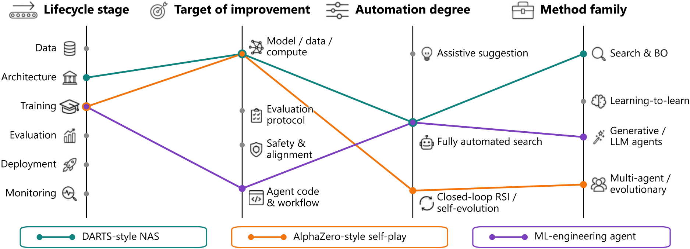
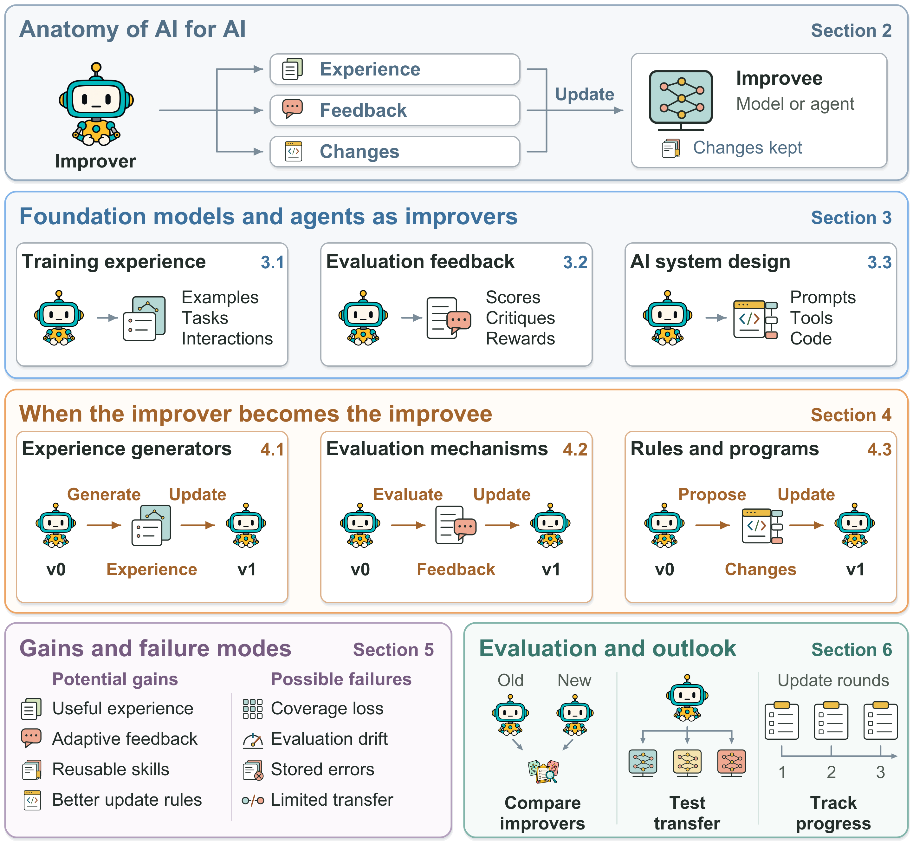
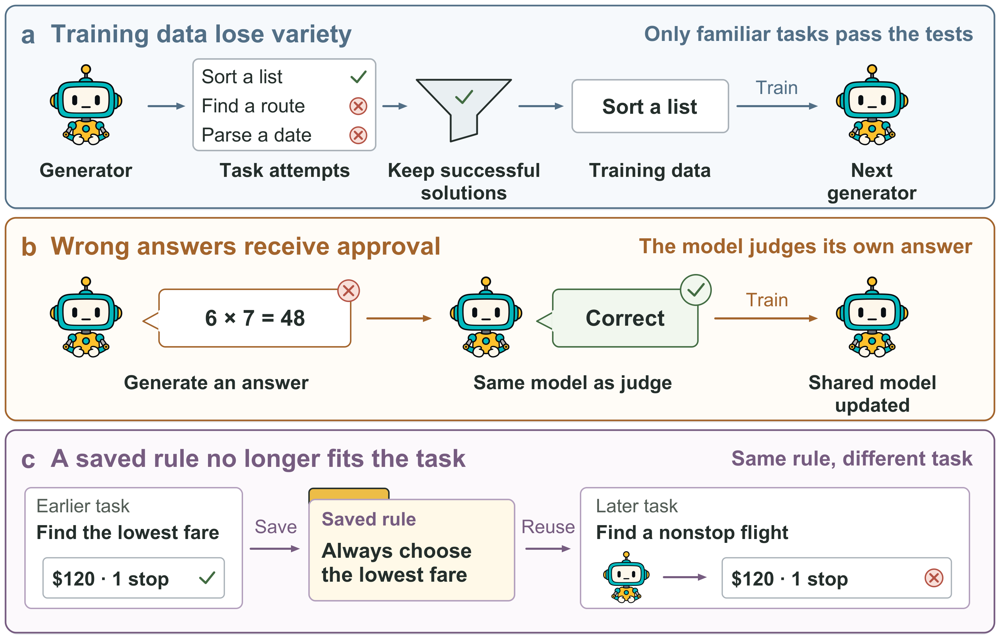
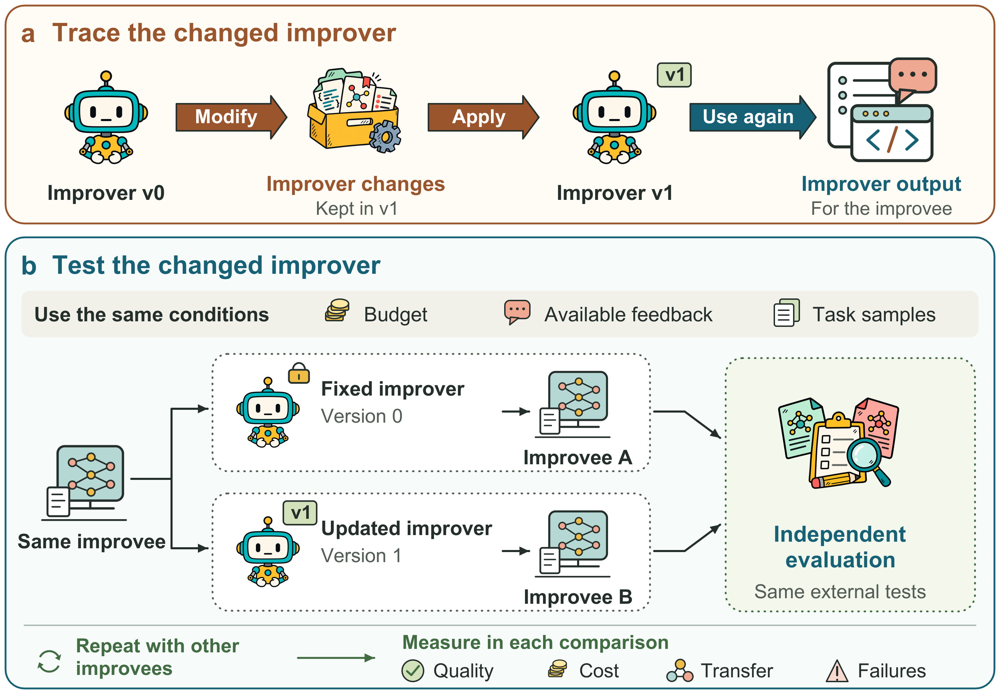

1Introduction
Building an AI system involves choosing examples, judging behavior and testing changes. Foundation models increasingly help with this work. Self-Instruct1 uses a model to generate instruction data. InstructGPT2 trains a responding model, or policy, using scores from a learned reward model. Automated Design of Agentic Systems (ADAS)3 uses a language-model agent to propose and test other agents. These systems place AI on both sides of an improvement process. One component supplies data, feedback or proposed changes to help improve another.
The same component can act as both improver and improvee. In STaR4, a model learns from selected reasoning traces and then produces new traces. These traces record the steps used to reach an answer. A self-rewarding model5 can supply both answers and the judgments used to train its next version. Promptbreeder6 changes prompts that guide later revisions of other prompts, and the Darwin Gödel Machine7 changes agent code that can produce further modifications. The resulting model or program may be better at a task. A further question is whether it has become better at improving AI. That question concerns the process that produces a result, as well as the result itself. The process can change through model learning, harness engineering, or both.
There are practical reasons to study this distinction. Better experience generators may reduce the need for new labels. Better evaluators may guide learning on tasks with costly human judgments. Better design agents may make AI development accessible with less manual trial and error. Yet the process can also repeat its own mistakes, select easier tasks or spend more resources to find a good candidate. A higher final score alone cannot show which of these changes helped. We must identify what changed, how it was used later and what the comparison actually tests.
Existing surveys provide important context. Reviews of language-model self-evolution8 describe how experience is collected, refined and used for updates. Agent surveys9,10 organize changes to models, memory, tools and workflows. Recent reviews11,12,13 also examine recursive improvement, changing evaluators and the reliability of agents over long tasks. We build on these views through a focused comparison of three functional roles. Our aim is to explain how changing an experience generator, an evaluation mechanism or an improvement program affects the next round of work.
We first describe the improvement process and its three AI roles, then examine updates to the improver. We connect gains to limits in task coverage, evaluation, saved experience and cost, and compare results from representative systems. We close with questions about recursion, how gains scale with resources, how long progress can continue and transfer across improvees. Our central question is when AI can make its own improvement process more effective over time.
2Anatomy of AI for AI
2.1Scope and Objects
In this Review, AI for AI (AI4AI) refers to processes that use AI to improve AI systems or the methods used to develop and update them13. We examine how foundation models and agents built on them carry out these processes. They generate learning experience, provide evaluation feedback, or propose and carry out system changes. “Improvement” describes the intended goal. Tests are needed to show whether a change achieves that goal.
AI systems can take two roles within this process. One system may take both. The first is the improver. It may be a large language model, a vision-language model, or an agent built around such a model. The second is the improvee, the target AI system that receives the proposed improvement. It may be another foundation model, a smaller model or an agent system. For example, Genesys14 uses language-model agents to design language-model architectures. CLOVA15 uses a language model to coordinate visual tools and their updates. The improvee need not have the same form as the improver. Multi-agent frameworks such as AutoGen16 and MetaGPT17 show why combining agents alone does not mean that the system learns.
Data, prompts, memory, tools and code carry changes into a system. We do not treat each of these objects as a separate AI. When a procedure changes, we identify which AI system uses it to make later improvements. A generated dataset is relevant because it is used to train a model. A revised prompt is relevant because it can change later model or agent behavior. Agent interfaces can also change task performance without changing model weights, as SWE-agent18 demonstrates.
Harness engineering concerns the software around a model, including prompts, memory, tools and rules for running and checking actions. It falls within AI4AI when AI helps propose, evaluate or apply changes to that software. Self-evolution concerns a system using experience to change itself, so the two can overlap. In Self-Harness19, a fixed model proposes changes to the harness through which it operates. Accepted changes are used in later rounds. Human choices about goals and approval can still guide an AI4AI process.
Figure 1 groups methods by the work their improvers do. We then examine how those improvers can change.

Figure 2 connects these roles to the structure of this Review. We first describe how AI supplies improvement. We then examine changes to the improver, their possible benefits and failures, and how to assess their value.

2.2Roles, Feedback and Updates
Five questions help us compare systems. Who guides the change? What changes? What feedback guides it? What is kept for later use? What stays fixed? In Self-Instruct1, for example, a fixed generator supplies selected examples that are kept for training another model. These questions separate a system's goal from the signal available during an update. A model score, a test result and a human judgment may all guide selection, but they support different claims about quality.
Saving a change makes later use possible, but does not show that it is used again. STaR4 keeps training examples and model checkpoints, which save model weights, for later rounds. Reflexion60 stores written feedback in memory. REvolve45 keeps reward programs that guide policy training. A component can therefore change even when all language-model weights stay fixed. Changing model weights, in turn, does not show that the method used to update them has improved.
The fixed parts should be named. They may include a proof checker, the task objective, a selection rule, the starting data or a higher-level optimizer. Keeping these parts fixed helps compare results across rounds and can limit unwanted changes. It can also limit which improvements a system can find. These fixed parts should be reported when describing how much work the system can do on its own.
2.3Boundaries and Timescales
We must state which components belong to the system and when we check whether a change is used again. Self-Refine65 revises an answer through feedback from a fixed model. Self-debugging66 and code-repair methods67 similarly use execution or explanation to improve a current output. These related methods are useful. If the changes are discarded when the task ends, they do not establish a reusable improvement in the model or agent. If the system saves a correction in memory and uses it on later tasks, it may have changed beyond the current answer68,69,70.
We must also state the time period used for analysis. One trial, one training step, one generated candidate and one independent run are different units. An optimizer may change during a training stage and remain fixed during deployment. metaTextGrad62 illustrates this distinction. It learns one optimizer through a second optimization process that stays fixed. For self-modifying programs, we need to track which version produces each later change63. These boundaries prevent a growing conversation or a long search from being mistaken for repeated improvement of the improver.
We use recursive self-improvement when a system changes how it produces improvements and uses the changed mechanism to help update itself again. An optimizer trained by a separate, fixed process has a different update structure. A recursive structure does not establish better improvement ability or gains that grow faster over time.
3Foundation Models and Agents as Improvers
The same three functions organize both fixed and changing improvers. We first describe what each function contributes. An AI4AI method can be useful while the component that supplies improvement remains fixed during the improvee's update. Table 1 groups representative methods by the work they supply.
3.1Training Experience
A foundation model can turn a small set of examples into a larger training resource. Self-Instruct1 generates instructions, inputs and responses, filters them and uses the resulting collection for instruction tuning. Later work22,71 extends model-generated instruction data to dialogue and information retrieval tasks. Models also supply formal statements, code and interface examples whose quality can be checked by formal rules or tests72,73,34. Here the model contributes examples that would otherwise require human effort. The learner may be the generator's next version or a different model74. Toolformer75 generates candidate tool calls for training, while Distilling Step-by-Step76 uses model-produced explanations to train smaller models.
Training experience can include correct answers, explanations, failed attempts, corrections and interaction histories4,77,78. Selecting examples can make the training data better fit the learner's needs. AP2O-Coder28 uses preferences related to errors and regular checks to adjust replay, or the reuse of earlier training examples. Active instruction tuning26 selects useful tasks based on how the model's responses change, while curricula that account for the learner's ability27 change the training tasks as its abilities change. A curriculum is a plan for which tasks a learner sees during training. Selecting useful experience and generating new experience are distinct operations. Both influence what is learned, and both need evaluation beyond the size of the resulting dataset.
For web agents and agents that act in physical or simulated environments, exploration supplies action sequences and feedback30,31,79,80. Experience can later train another model, support a memory lookup or become a reusable skill. These uses differ in cost, in what is kept and in how it is used later. The main test is whether this experience helps the improvee learn or act better than experience from a suitable alternative source.
3.2Evaluation Feedback
Evaluation provides feedback that can guide selection and learning. InstructGPT2 uses a reward model trained on human comparisons to guide policy training. The reward model represents human feedback, but during this stage it acts as the AI improver. Direct preference optimization81 trains on preferred and less preferred responses without fitting a separate reward model for that step. If a model supplies those preferences, it still contributes evaluation to the broader process. The training algorithm alone does not identify the source of judgment. RLAIF39 studies using AI preferences in place of human feedback.
Feedback can take several forms. Scores rank final responses. Process verifiers check intermediate steps, while critic models identify problems and suggest repairs42,82,43. Reward code converts an environment state into a training signal, while written scoring criteria guide evaluation of open-ended work45,47. Visual and web tasks require checks that connect language to the relevant images or interactions83,84. The form of feedback affects what errors a learner can detect. A final score may identify failure without explaining which action caused it.
Agreement with another judge is not enough to make an evaluator useful. Its feedback must help the improvee choose or learn better behavior. Work on critics trained through correction outcomes41 directly studies this link. Evaluation without reference answers and evaluation based on the effects of an output85,86 offer further ways to test quality when complete answers are difficult to obtain. Each still needs to explain what makes an outcome useful or a reference reliable.
3.3AI System Design
A model can propose changes to prompts87, tools, architecture or the way several agents work together. TextGrad52 uses language feedback to improve components of a larger system. ProTeGi88 and GEPA89 also use written feedback to improve prompts, while AFlow53 searches over agent workflows. ADAS3 searches over agent programs, while Dolphin90 and TusoAI91 automate parts of AI research and development. The proposed design can be run, tested, saved and revised. AI-assisted changes to prompts, tools and agent workflows are forms of harness engineering.
Architecture design gives a clear example in which the two AI roles differ. Genesys14 and NADER56 use language-model agents to propose neural-network architectures, and RZ-NAS57 uses a model to review designs and assess architectures at low cost. Models can also write procedures for selecting tensor-network structures or acquisition functions, which choose what to test next in Bayesian optimization92,93. We include these works because a foundation model helps construct an AI system or an AI-development procedure. We do not separately review traditional architecture or hyperparameter search.
Search history can improve proposals while the designer's weights and code stay fixed. Compare proposals made with and without that history under the same search budget. A better final design does not by itself show a better design process.
| Function | Examples | Contribution |
|---|---|---|
| Learning experience | ||
| Training data | Self-Instruct1, STaR4 | Instructions and reasoning traces |
| Interactive practice | OpenWebVoyager30, AdvEvo-MARL32 | Action sequences and opponent tasks |
| Evaluation feedback | ||
| Scores and comments | Self-Rewarding5, CTRL41 | Preferences and repair suggestions |
| Rewards and criteria | REvolve45, DR Tulu47 | Reward code and written criteria |
| System changes | ||
| AI system design | TextGrad52, ADAS3, Genesys14 | Prompts, workflows and architectures |
| Tools and memory | Voyager59, Reflexion60, CLOVA15 | Reusable code and experience |
| Improvement procedures | Promptbreeder6, STOP63, DGM7 | Prompts and code that guide updates |
4When the Improver Becomes the Improvee
The components that perform the three roles in Section 3 can themselves be updated. A generator can learn from its own data. An evaluator can change its judgments. An optimizer can revise the instructions or code it uses to make improvements. The key change occurs when the updated component is used again to improve AI. These paths describe what is updated and how it is used later. They are not levels of intelligence.
4.1Experience Generators
A model can use successful attempts to build a training set and then generate the next set with its updated weights. STaR4 provides a clear example. It produces reasoning traces, keeps traces that lead to known correct answers and trains on them. When direct generation fails, the correct answer helps the model produce an explanation for training. The new checkpoint then generates the next round of traces. Training may restart from the original weights. Selected examples still carry information from one round to the next. SPIN94 uses responses from earlier model versions in contrast with a fixed human demonstration set. Quiet-STaR95 trains the model to generate reasoning that helps predict later text. These feedback sources impose different limits on what self-generated experience can teach.
The benefit depends on what later generators add. More correct traces may reduce wasted training, but repeating easy examples adds few new kinds of problems. Spend Wisely96 studies how to divide the computing budget for generating outputs during repeated self-training. Its findings show why the generation budget matters for learning. Related approaches97,98,25 train models to revise outputs over several attempts, use search histories to improve program generation, or add formal proof data when progress slows. Their shared resource is experience that the current model can produce and a later model can use. Work on evolutionary algorithm discovery99 similarly updates the language model used for later search. These methods use different feedback and update schedules, so one self-training round can have very different costs.
Task generation changes which problems the learner sees, not only how it solves a fixed set. STP23 alternates between proposing mathematical claims and trying to prove them. A formal proof checker tests proposed solutions, while a stored collection keeps proofs from the three most recent rounds. The updated models thus affect both future tasks and future solutions. LeanAgent100 and work on learning formal mathematics through intrinsic motivation101 also link the supply of problems or proofs to a changing learner. Formal checking gives a strong correctness test within the proof system. It does not show that the chosen problems cover the mathematics the user cares about.
Absolute Zero24 uses code execution to support task proposal and problem solving. One model takes both roles, and code execution provides rewards without a supplied set of reasoning examples. This reduces dependence on a fixed human task collection. It still depends on the initial model, the allowed task format, the code execution system and the training objective. Shared weights make it harder to identify the cause of a gain. Removing the proposer loss does not keep the proposer fixed, because solver training still changes the shared model. A separate, fixed generator would more directly test the value of updating the task generator.
For interactive agents, experience includes states, actions and consequences. OpenWebVoyager30 repeats exploration, filtering and training over three rounds. The updated web agent produces later action sequences, while a fixed GPT-4o filter checks experience and the initial imitation data remain available. AdvEvo-MARL32 instead updates attacking and defending agents, so each helps shape the other's future experience. These designs make experience responsive to current abilities. They also leave different parts fixed. A fixed judge does not prevent the explorer from changing, and a changing opponent does not by itself improve the rule that trains either agent. A comparison with a fixed collection of examples tests a different question from a comparison with a fixed generator that can produce new examples.
4.2Evaluation Mechanisms
During policy training with a reward model, the reward model can remain fixed while the policy changes. Self-Rewarding Language Models5 remove this separation by using the current model to generate answers and judge candidate responses. The resulting preferences train a later version through direct preference optimization. That version then supplies both responses and judgments. The main analysis compares an initial supervised model with the next two trained versions, and also tests a fourth version. Agreement with human preferences on response pairs held out for testing rises from 78.7% to 80.4% and then 81.7%. Other measures of judgment do not all improve, so the gains depend on what is measured and in which setting.
This arrangement can let evaluation keep pace with stronger responses. It can also make the generator and judge repeat the same errors. Calibrated Self-Rewarding Vision Language Models38 use external visual signals to check and adjust the model's own preferences. The shared model changes, but the visual reference provides a check beyond the model's confidence. Training a separate critic model offers another approach. CTRL41 trains code critics using the success of corrections made by a fixed generator, and tests their use with other generators. This links critic quality to the usefulness of its feedback. Agreement with a reference score and the ability to help a learner are related but distinct evaluation goals.
An evaluator can also change without updating model weights. REvolve45 uses a language model to revise reward programs from feedback, then uses those programs to train policies. The reward code is an active part of the evaluation mechanism. ROSKA46 combines reward design with the reuse of policy knowledge across iterations. Keeping a trained policy can reduce the cost of further training. However, the apparent quality of a reward program then depends on what the policy has already learned. A reward program that works well with a previously trained policy may work poorly with a new one. Comparisons should report both the reward program and the policy used before further training.
For tasks without a simple execution test, evaluation can use a rubric, meaning a written set of scoring criteria. DR Tulu47 updates rubrics and the stored collection of rubrics during reinforcement learning for deep research. The models that generate and apply these criteria remain fixed. What changes is the written guidance used to judge evidence and responses during later training. RuCL48 adjusts the contribution of different rubric levels as a multimodal learner develops. By contrast, using a fixed rubric to revise an answer at inference time can improve that answer without changing the evaluator102. What the method updates matters more than whether its name includes terms such as self-evolution.
A higher internal score is hard to interpret unless changes in the scoring process are also recorded. The response may have improved, the scoring scale may have changed, or the evaluator may have become easier to satisfy. Keeping reference judgments fixed and testing external outcomes can help separate these explanations. So can testing whether the updated evaluator helps train a new learner. These checks allow evaluation to change while measuring whether the changes help.
4.3Rules and Programs
The third path changes how proposed improvements are produced. At the prompt level, a task prompt tells a model how to solve a problem, whereas a mutation prompt tells it how to revise a task prompt. Promptbreeder6 updates both within a collection of candidate prompts. A saved mutation prompt guides later proposals, so the search changes part of the method used to propose improvements. A control that removes mutation-prompt updates uses the same number of evaluations. This supports the value of updating those prompts in the tested setting. Equal evaluation counts do not imply equal token use, and the base model and higher-level search framework remain fixed.
metaTextGrad62 uses one optimizer to improve other language-model optimizers. It changes their prompts and how they are combined. The optimizer that directs these changes stays fixed. The learned optimizer can then improve other programs, including with different models or datasets. A related distinction appears in memory systems. MemoPilot103 trains a component that updates memory for a fixed task-solving agent. Learning how to update memory differs from adding one more memory entry. Both can improve later behavior, but they change different parts of the process.
STOP63 uses an optimizer program that can revise its own code. Given a program and a measure of its quality, the optimizer asks a language model to produce better code. The input can also be the optimizer's own code. A revised version then performs later optimization. The study compares resulting optimizers with the starting optimizer and tests a selected improved version on five new tasks. This is evidence about a reusable improvement procedure, beyond a better answer on the original task. The reported experiments also show failures with weaker models and declines in some iterations. Using an optimizer to revise itself may help, but a new version can also be worse.
The Darwin Gödel Machine, or DGM7, applies program change to a coding agent. Agents revise their own tools and code. The resulting agents are saved in an archive and can be selected for later changes. The agent's harness changes while its model weights remain fixed. In the reported SWE-bench setup, the best discovered agent raises task success from 20.0% to 50.0%. This measures the final agent's task performance. It does not measure how well that agent improves later agents. A control keeps the initial agent fixed as the system that proposes changes. The reported search has 80 rounds of candidate generation across different agents. This does not mean that one agent improves 80 times in a row. Costs also differ across the main search and this control. The results support useful self-modification within the tested setting, but do not establish the size of its advantage under the same budget.
Huxley-Gödel Machine, or HGM64, extends this search by choosing which saved agents to modify and where to spend evaluations. Its comparison under 800 evaluations helps examine how a limited evaluation budget is used. The allocation rules remain fixed, even as agent code changes. ADAS3 shows why the agent being designed and its designer must be considered separately. A fixed meta-agent designs agents and consults an archive of past designs. The archive can supply useful context for later design attempts, but finding a better agent does not show that the meta-agent's code or model has improved. DGM, HGM and ADAS should therefore be compared component by component, rather than grouped by the quality of their final agents alone.
A system may combine these paths. An updated agent may generate better experience, write a new scoring program and change the prompt used for its next revision. Combining these functions can reduce human work, but makes it harder to identify which update caused a gain. We need to test which saved change helps later improvement, and under what feedback and budget conditions. A loop alone does not answer this question.
Updating one component and changing how several components work together can have different effects. Updating a generator lets it respond to the learner's current limits. Updating an evaluator may let it identify errors in the generator's new outputs. Updating the modification program can change how both are used. If all three change at once, however, a later gain has several possible causes. A more accurate judge may reject examples that an earlier generator could already produce. A better generator may instead make an unchanged judge appear more reliable because the candidates become easier to distinguish.
These alternatives suggest different update schedules. A generator can change frequently while a reference evaluator stays fixed for measurement. A new evaluator can first be tested on stored outputs from several generator versions. A revised optimizer can then be compared using the same data and evaluator before the full loop resumes. Testing these updates separately may help identify useful changes and gains that depend on several changes together. This is a proposed experiment, not a requirement for how useful systems must be built.
5Gains and Failure Modes
An updated improver may better meet the learner's current needs, but it may also carry errors into later rounds. We examine these gains and risks together because the same design choices often affect both. Figure 3 shows three ways errors and bias can carry into later rounds.

5.1Experience Quality and Coverage
A stronger generator can supply correct examples that were previously too rare to obtain. However, filtering for success also favors tasks the model already finds easy. Work on imbalance between frequent and rare cases in vision-language self-improvement104 observes this effect and tests changes to sampling. Generating new tasks, adjusting the curriculum and maintaining variety can help cover cases beyond those already solved23,105,36. The useful question is how much new learning value a round adds. The fraction of correct samples alone cannot answer it. The performance of LIMA106 with a small, carefully selected training set also shows why data volume alone does not measure learning value. Controlled self-training studies107 report gains on harder tasks and longer sequences. Evaluation should track which kinds of problems the learner can now solve.
Research on model collapse108,109 explains how repeated training on model-generated data can reduce quality or diversity. Some kinds of data may become poorly represented or disappear from later outputs. Its conclusions depend on assumptions about sampling, model fitting and the mixture of real and synthetic data. They do not imply that every verified self-training loop must fail. Keeping earlier data while adding new data can avoid collapse in the settings studied by Gerstgrasser et al.110. Selecting data based on preferences can also support improvement under stated assumptions about quality signals and the separation between peaks in the data distribution111. These results show why the choice of data matters. Keeping earlier data helps preserve the range of examples available for training. Filtering and sampling determine which examples receive the most training attention.
Correctness and diversity should therefore be recorded separately. Execution can establish that a program passes the available tests. It cannot show that all useful behaviors appear in the training set. For agents, a successful action sequence may even contain weak reasoning that rewards based only on final outcomes do not discourage. Guided Thought Reinforcement112 studies this problem in visual environments. Process checks and broader task coverage can address different failures, so one should not be treated as a substitute for the other. Verification bounds for small transformers113 and reasoning analysis in SPARKLE114 show why evaluation should test error detection and repair as well as final accuracy.
5.2Evaluation Adaptation and Drift
A fixed evaluator can become less useful when a learner produces responses unlike those seen during evaluator training. Updating the evaluator or its criteria may help distinguish stronger candidates. Yet model-generated comments and scores can also be wrong. Studies of text and visual judges115,116,117,118 report sensitivity to presentation, misleading content and visual manipulation. The results apply to the tested judges and settings. They establish reasons to test a scoring process, not a permanent limit on all model-based evaluation. ReaLMistake119 tests error detection, while text and figure-caption studies120,121 examine agreement with human ratings. MMStar122 checks whether correct answers depend on visual input.
The risk is greater when a model judges its own work. The model may make an error while answering and then fail to notice it while judging. Reward overoptimization studies123 show a problem in controlled experiments. Optimizing the reward used for training, called a proxy reward, can eventually lower a separate reference reward. Other work124 finds that reward models with similar accuracy on a fixed dataset can lead to policies of different quality after training. Improving agreement on a fixed test set is therefore not enough to establish a better training signal. Inference-time alignment analysis125 links coverage to reward-model error under explicit assumptions. MONA126 and capability-seeking RL experiments127 show why tests should check whether policies gain reward in ways that miss the intended goal.
External checks help when their own limits are stated. Feedback based on visual observations can help correct errors83, and calibrated self-rewarding38 uses an external visual reference. Formal proofs and executable tests give stronger checks for claims they can express. They remain incomplete measures of open-ended usefulness. A small, fixed reference set can reveal evaluation drift, meaning changes in scoring standards, while criteria for individual tasks evolve. Periodic independent review can then test whether new criteria preserve the intended objective. This supports adaptation without allowing each version to define its own success.
5.3Memory, Archives and Error Accumulation
Memory and archives make earlier work available after an update. ExpeL61 illustrates how agents can extract reusable lessons from interaction. Reflexion60 keeps written feedback, whereas DGM7 keeps different agent programs that can be run again. Other agents store mistake summaries, contextual experience or reusable task knowledge128,129,130,131,132,133. Reusing useful experience can reduce repeated failures. It also makes the choice of what to store, retrieve and remove part of the learning process. A wrong memory may be reused with more confidence simply because it has appeared before.
Storage capacity alone does not solve this problem. Research on software agents134 finds that storing an entire task attempt as one memory can hide useful differences when similar tasks need different steps. MemoryAgentBench135 tests memory retrieval, learning during use, understanding information spread across a long history and forgetting selected information. These functions can conflict. Keeping more history preserves experience but can add outdated or misleading context. Archives keep alternative candidates that would be lost if only the latest version were saved. They also add storage, evaluation and selection costs. Their benefit depends on later access to useful candidates, not only archive size. Replay experiments136 examine how much earlier learning is preserved when storage space is ample. A paper proposing separate memory components137 suggests separating fast updates to stored context from slower model-weight changes. Tests should measure later adaptation as well as the ability to recall information.
A saved change may also affect behavior on tasks that were not tested. Your Agent May Misevolve138 studies safety loss under changes to model parameters, memory and workflows. Related work139 reports more tool hallucinations after reasoning improvements, and agent security evaluations140 include attacks on memory and tools. Such results call for checks across several objectives141. They do not show that self-improvement always reduces safety. They show why task gains should not be used as a complete measure of a changed system.
Saving earlier versions supports direct comparisons. Researchers can rerun an earlier generator, compare old and new rubrics on the same responses, or test a modification rule on agents it did not recently produce. Records should also include the tasks, feedback and resources used to produce each version.
5.4Transfer and Cost
Transfer has two meanings here. A discovered agent may solve a new task, or the updated designer may produce a better agent for that task. ADAS3 reports transfer of discovered designs. STOP63 tests an improved optimizer on new optimization tasks, while metaTextGrad62 studies reuse of learned optimizers. These experiments test different things. A model or program that works on new tasks is useful. It does not show that the method used to produce it can also work on new tasks.
A loop uses resources to generate candidates, obtain feedback, train, test and save system states. Work on meta-agent search142 and synthetic-data bootstrapping96 shows why the choice of context and the computing budget affect the outcome. A method can use fewer evaluations while each evaluation becomes more expensive. Reusing policy weights can reduce training costs, while larger memories can increase inference costs. Comparisons should report both useful performance at a fixed budget and the budget needed to reach a fixed level of performance. The cost of learning an improver should then be spread over a stated number of future uses. Its practical value therefore depends on how often it will be used, not only on its best search result. Strategy auctions143 study how to assign work to models of different sizes, while test-time discovery144 makes the cost of adapting to one problem explicit. These results show why reports should separate the cost of reusable learning from the cost of work on one improvee. Code-refinement studies145 and noisy evolution-strategy analysis146 show a tradeoff between proposing more candidates and evaluating each more carefully. The useful balance depends on noise and cost.
6Evaluation and Outlook
6.1Evaluating Updated Improvers
Evaluating an improvee and evaluating its improver answer different questions. First, we need to identify what changes in the improver, what is kept and how it is used later. A separate comparison tests whether the updated improver produces better improvees under comparable conditions. Table 2 applies this distinction to representative systems. It records positive results as well as the limits of the comparisons.
A direct experiment uses two copies of the same improvee. One receives changes from the updated improver, the other from an earlier version of that improver kept fixed. Both improvers have comparable budgets, access to feedback and task samples. We then compare the quality of the resulting improvees. Independent tests should not guide training or the choice of updates. Figure 4 illustrates this comparison. Removing one loss term does not keep a component fixed if it shares weights with another component that is still being trained. Giving one improver a larger archive also makes it harder to separate better modification from more context.

The existing literature supplies parts of this evidence. Self-Rewarding5 tests judgments against human preferences kept for evaluation. Promptbreeder6 tests what happens when mutation-prompt updates are removed. STOP63 tests an improved optimizer on new tasks. DGM7 includes a control that uses the fixed initial agent to make changes, and HGM64 compares search within an evaluation limit. These results support specific kinds of improved improvers. They cannot be ranked directly because they update different components, use different budgets and measure different outcomes.
Benchmarks can support this comparison without replacing it. MLAgentBench147 and MLE-bench148 test work on machine-learning tasks. VeRO149 records versions, observations and rewards when agents optimize other agents. Software benchmarks150,151,152 test software fixes, debugging or code restructuring. Their scores measure what an agent can do in a defined environment. An improvement study must additionally identify how the evaluated agent was obtained, including unsuccessful proposals and the cost of search. Repeated trials are needed because one successful agent does not show how reliably the process produces good agents.
| System | Updated component | Evaluation | Key limitation |
|---|---|---|---|
| STaR4 | Reasoning generator | Gains over training rounds | Needs fixed generator at equal cost |
| Absolute Zero24 | Shared proposer and solver | Training without proposer loss | Shared weights link both updates |
| Self-Rewarding5 | Shared responder and judge | Checks against human preferences | Judge change not tested separately |
| REvolve45 | Reward code | Comparison of reward search | Designer model stays fixed |
| Promptbreeder6 | Mutation prompts | Control with equal evaluations | Equal token cost not shown |
| metaTextGrad62 | Optimizer prompts and structure | Tests across models and datasets | The optimizer updating it stays fixed |
| STOP63 | Optimizer code | Tests on five new tasks | Some updates reduce performance |
| DGM7 | Agent tools and code | Tests of agent updates and archive | Control uses a different budget |
| ADAS3 | Agent designs and archive | Tests of designs on new tasks | Designer model and code stay fixed |
Repeatedly using test results to select updates can favor those tests. Fresh tests help check progress beyond them. Work on dynamic benchmarks153 studies this problem under explicit assumptions. LiveCodeBench154 and checks for evaluation data appearing in training155 address related concerns. Changes to benchmarks and hosted models should be recorded separately from changes to the improver. Work on API-based evaluation156 also recommends recording model versions and checking for changes in behavior. These records help distinguish changes in the improvement process from changes in the conditions used to test it.
6.2Future Directions
The comparisons above support four broader questions about improvement processes.
When does improvement become recursive? A process becomes recursive when changes to its improvement mechanism help produce its own later updates. Promptbreeder6 and STOP63 provide examples, but such a loop does not show that improvement ability grows. Which conditions allow a changed mechanism to produce better later updates? Studies should separate changes to generators, evaluators and update procedures, while tracking which goals and checks stay fixed. This can reveal when progress depends on a changing improver and when it depends mainly on a fixed external process.
Is there an improvement scaling law? Do gains follow a predictable pattern as compute, feedback and improver ability increase? This is an open empirical question. Budgets must include generation, evaluation, training and failed proposals, as well as the cost of creating the improver. Budget-aware coding benchmarks157 illustrate why the costs of calls and tests matter. At each budget, comparing fixed and updated improvers can test whether changing the improver adds value beyond additional search. Any proposed relationship should be tested on tasks and improvees beyond those used to fit it.
What limits the improvement horizon? Here, the improvement horizon is the number of update rounds over which a process can sustain useful progress under stated resource limits and independent tests. It differs from the length of a single agent task. Gains need not occur in every round. Progress may stop because new experience becomes scarce, evaluation becomes unreliable, saved errors accumulate or costs exceed benefits. Studies should identify which limits appear first and whether changes to data, evaluation or memory extend progress. The horizon therefore depends on the full process, not only on the model.
Can an improver generalize across improvees? A broadly useful improver could reduce the need to design a separate update process for each AI system. STOP63 and metaTextGrad62 offer early tests, but the question is what transfers. A learned update rule, a stored archive and a finished agent are different results. Studies should apply the same improver to unseen improvees, including different model families and agent harnesses. Any further adjustment and its cost should be reported separately. This would help distinguish general improvement methods from solutions tied to one system.
7Conclusion
AI4AI concerns the processes through which AI improves AI systems and their development methods. Foundation models and agents contribute through experience, feedback and system changes. Model learning and harness engineering both fit this view. When the improver becomes the improvee, these changes can affect how later improvements are produced.
The reviewed systems show useful changes within specific settings. They do not yet establish that recursive updates lead to sustained gains across AI systems. Evaluation must test both the resulting improvees and the process that produced them. This provides a basis for studying when improvement becomes recursive, how gains depend on resources, what limits continued progress and which methods transfer. The broader aim is to understand and build improvement processes that remain useful as models, tasks and conditions change.
Data availability
The companion website for this Review is available at https://3dagentworld.github.io/AI4AI-survey.
References
- Wang, Y. et al. Self-instruct: Aligning language models with self-generated instructions. Proceedings of the 61st Annual Meeting of the Association for Computational Linguistics (Volume 1: Long Papers), 13484–13508 (Association for Computational Linguistics, Toronto, Canada, 2023).↑
- Ouyang, L. et al. Training language models to follow instructions with human feedback. Advances in Neural Information Processing Systems, Vol. 35, 27730–27744 (Curran Associates, Inc., 2022).↑
- Hu, S., Lu, C. & Clune, J. Automated design of agentic systems. The Thirteenth International Conference on Learning Representations (2025).↑
- Zelikman, E., Wu, Y., Mu, J. & Goodman, N. STar: Bootstrapping reasoning with reasoning. Advances in Neural Information Processing Systems (2022).↑
- Yuan, W. et al. Self-rewarding language models. Proceedings of the 41st International Conference on Machine Learning, Vol. 235 of Proceedings of Machine Learning Research, 57905–57923 (PMLR, 2024).↑
- Fernando, C., Banarse, D. S., Michalewski, H., Osindero, S. & Rockt\"aschel, T. Promptbreeder: Self-referential self-improvement via prompt evolution. Proceedings of the 41st International Conference on Machine Learning, Vol. 235 of Proceedings of Machine Learning Research, 13481–13544 (PMLR, 2024).↑
- Zhang, J., Hu, S., Lu, C., Lange, R. T. & Clune, J. Darwin gödel machine: Open-ended evolution of self-improving agents. The Fourteenth International Conference on Learning Representations (2026).↑
- Tao, Z. et al. A survey on self-evolution of large language models. arXiv preprint arXiv:2404.14387 (2024).↑
- ang Gao, H. et al. A survey of self-evolving agents: What, when, how, and where to evolve on the path to artificial super intelligence. Transactions on Machine Learning Research (2026). Survey Certification.↑
- Fang, J. et al. A comprehensive survey of self-evolving ai agents: A new paradigm bridging foundation models and lifelong agentic systems. arXiv preprint arXiv:2508.07407 (2025).↑
- Chen, M., Wang, L. & Qu, B. Recursive self-improvement in ai: From bounded self-refinement to autonomous research loops. arXiv preprint arXiv:2607.07663 (2026).↑
- Wang, K. et al. Diving into reliable self-evolving agents: A survey. OpenReview Archive preprint (2026).↑
- Wu, K. et al. Ai4ai survey: From long-horizon agents to recursive self-improvement–-definitions, reliable horizons, and open problems. Preprints.org (2026). Preprint, version 1, posted 28 August 2026.↑
- Cheng, J., Clark, P. & Richardson, K. Language modeling by language models. The Thirty-ninth Annual Conference on Neural Information Processing Systems (2025).↑
- Gao, Z. et al. Clova: A closed-loop visual assistant with tool usage and update. Proceedings of the IEEE/CVF Conference on Computer Vision and Pattern Recognition (CVPR), 13258–13268 (2024).↑
- Wu, Q. et al. Autogen: Enabling next-gen LLM applications via multi-agent conversations. First Conference on Language Modeling (2024).↑
- Hong, S. et al. MetaGPT: Meta programming for a multi-agent collaborative framework. The Twelfth International Conference on Learning Representations (2024).↑
- Yang, J. et al. Swe-agent: Agent-computer interfaces enable automated software engineering. NeurIPS (2024).↑
- Zhang, H. et al. Self-Harness: Harnesses that improve themselves (2026). \hrefhttps://arxiv.org/abs/2606.09498arXiv:2606.09498.↑
- Xu, C. et al. WizardLM: Empowering large pre-trained language models to follow complex instructions. The Twelfth International Conference on Learning Representations (2024).↑
- Sun, Z. et al. Principle-driven self-alignment of language models from scratch with minimal human supervision. NeurIPS (2023).↑
- Askari, A. et al. SOLID: Self-seeding and multi-intent self-instructing LLMs for generating intent-aware information-seeking dialogs. Findings of the Association for Computational Linguistics: NAACL 2025, 6390–6410 (Association for Computational Linguistics, Albuquerque, New Mexico, 2025).↑
- Dong, K. & Ma, T. STP: Self-play LLM theorem provers with iterative conjecturing and proving. Forty-second International Conference on Machine Learning (2025).↑
- Zhao, A. et al. Absolute zero: Reinforced self-play reasoning with zero data. The Thirty-ninth Annual Conference on Neural Information Processing Systems (2025).↑
- Lin, Y. et al. Goedel-prover-v2: Scaling formal theorem proving with scaffolded data synthesis and self-correction. The Fourteenth International Conference on Learning Representations (2026).↑
- Kung, P.-N., Yin, F., Wu, D., Chang, K.-W. & Peng, N. Active instruction tuning: Improving cross-task generalization by training on prompt sensitive tasks. Proceedings of the 2023 Conference on Empirical Methods in Natural Language Processing, 1813–1829 (Association for Computational Linguistics, Singapore, 2023).↑
- Li, Y. et al. Teaching according to talents! instruction tuning LLMs with competence-aware curriculum learning. Findings of the Association for Computational Linguistics: EMNLP 2025, 11724–11741 (Association for Computational Linguistics, Suzhou, China, 2025).↑
- Zhang, J., Xia, W., Dong, H., Lin, Q. & Cao, J. Ap2o-coder: Adaptively progressive preference optimization for reducing compilation and runtime errors in llm-generated code. Proceedings of the AAAI Conference on Artificial Intelligence, 34701–34709 (2026).↑
- Zhan, R. et al. ExGRPO: Learning to reason from experience. The Fourteenth International Conference on Learning Representations (2026).↑
- He, H. et al. OpenWebVoyager: Building multimodal web agents via iterative real-world exploration, feedback and optimization. Proceedings of the 63rd Annual Meeting of the Association for Computational Linguistics (Volume 1: Long Papers), 27545–27564 (Association for Computational Linguistics, Vienna, Austria, 2025).↑
- Yang, Q., Wang, X., Perszyk, D. & Wang, Y.-X. Self-guided hierarchical exploration for generalist foundation model web agents. The Thirty-ninth Annual Conference on Neural Information Processing Systems (2025).↑
- Pan, Z. et al. Advevo-MARL: Shaping internalized safety through adversarial co-evolution in multi-agent reinforcement learning. Forty-third International Conference on Machine Learning (2026).↑
- Liu, B. et al. SPIRAL: Self-play on zero-sum games incentivizes reasoning via multi-agent multi-turn reinforcement learning. The Fourteenth International Conference on Learning Representations (2026).↑
- Wu, J. et al. UICoder: Finetuning large language models to generate user interface code through automated feedback. Proceedings of the 2024 Conference of the North American Chapter of the Association for Computational Linguistics: Human Language Technologies (Volume 1: Long Papers), 7511–7525 (Association for Computational Linguistics, Mexico City, Mexico, 2024).↑
- Qiu, H. et al. Step: Enhancing video-llms' compositional reasoning by spatio-temporal graph-guided self-training. Proceedings of the IEEE/CVF Conference on Computer Vision and Pattern Recognition (CVPR), 3284–3294 (2025).↑
- Zhao, H. et al. Achieving olympia-level geometry large language model agent via complexity boosting reinforcement learning. The Fourteenth International Conference on Learning Representations (2026).↑
- Wang, X. et al. GUI0: Self-evolving foundational GUI agents in super app ecosystems. Proceedings of the 64th Annual Meeting of the Association for Computational Linguistics (Volume 1: Long Papers), 44348–44361 (Association for Computational Linguistics, San Diego, California, United States, 2026).↑
- Zhou, Y. et al. Calibrated self-rewarding vision language models. The Thirty-eighth Annual Conference on Neural Information Processing Systems (2024).↑
- Lee, H. et al. RLAIF vs. RLHF: Scaling reinforcement learning from human feedback with AI feedback. Forty-first International Conference on Machine Learning (2024).↑
- Asai, A., Wu, Z., Wang, Y., Sil, A. & Hajishirzi, H. Self-RAG: Learning to retrieve, generate, and critique through self-reflection. The Twelfth International Conference on Learning Representations (2024).↑
- Xie, Z. et al. Teaching language models to critique via reinforcement learning. Forty-second International Conference on Machine Learning (2025).↑
- Setlur, A. et al. Rewarding progress: Scaling automated process verifiers for LLM reasoning. The Thirteenth International Conference on Learning Representations (2025).↑
- Yang, R. et al. The lighthouse of language: Enhancing LLM agents via critique-guided improvement. The Thirty-ninth Annual Conference on Neural Information Processing Systems (2025).↑
- Ma, Y. J. et al. Eureka: Human-level reward design via coding large language models. The Twelfth International Conference on Learning Representations (2024).↑
- HAZRA, R., Sygkounas, A., Persson, A., Loutfi, A. & Martires, P. Z. D. REvolve: Reward evolution with large language models using human feedback. The Thirteenth International Conference on Learning Representations (2025).↑
- Huang, C. et al. Efficient language-instructed skill acquisition via reward-policy co-evolution. Proceedings of the AAAI Conference on Artificial Intelligence, 14576–14584 (2025).↑
- Shao, R. et al. DR tulu: Reinforcement learning with evolving rubrics for deep research. Forty-third International Conference on Machine Learning (2026).↑
- Chen, Y. et al. RuCL: Stratified rubric-based curriculum learning for multimodal large language model reasoning. Forty-third International Conference on Machine Learning (2026).↑
- Yang, C. et al. Large language models as optimizers. The Twelfth International Conference on Learning Representations (2024).↑
- Guo, Q. et al. Connecting large language models with evolutionary algorithms yields powerful prompt optimizers. The Twelfth International Conference on Learning Representations (2024).↑
- Khattab, O. et al. DSPy: Compiling declarative language model calls into state-of-the-art pipelines. The Twelfth International Conference on Learning Representations (2024).↑
- Yuksekgonul, M. et al. Optimizing generative ai by backpropagating language model feedback. Nature 639, 609–616 (2025).↑
- Zhang, J. et al. AFlow: Automating agentic workflow generation. The Thirteenth International Conference on Learning Representations (2025).↑
- Yang, J., Wan, G., Zhang, M. & Ye, M. Raas: Llm agentic system architecture search with grpo. Proceedings of the IEEE/CVF Conference on Computer Vision and Pattern Recognition, 34470–34479 (2026).↑
- Wei, Y., Huang, Z., Xu, R., Wang, H. & XING, W. W. EvoMAS: Heuristics in the loop—evolving smarter agentic workflows. Forty-third International Conference on Machine Learning (2026).↑
- Yang, Z. et al. Nader: Neural architecture design via multi-agent collaboration. Proceedings of the IEEE/CVF Conference on Computer Vision and Pattern Recognition (CVPR), 4452–4461 (2025).↑
- Ji, Z., Zhu, G., Yuan, C. & Huang, Y. RZ-NAS: Enhancing LLM-guided neural architecture search via reflective zero-cost strategy. Forty-second International Conference on Machine Learning (2025).↑
- Ding, K., Wang, Y. & Xiang, S. Evovlma: Evolutionary vision-language model adaptation. Proceedings of the 33rd ACM International Conference on Multimedia, MM ’25, 4619–4628 (ACM, 2025).↑
- Wang, G. et al. Voyager: An open-ended embodied agent with large language models. Transactions on Machine Learning Research (2024).↑
- Shinn, N., Cassano, F., Gopinath, A., Narasimhan, K. R. & Yao, S. Reflexion: language agents with verbal reinforcement learning. Thirty-seventh Conference on Neural Information Processing Systems (2023).↑
- Zhao, A. et al. Expel: Llm agents are experiential learners. AAAI, 19632–19642 (2024).↑
- Xu, G., Yuksekgonul, M., Guestrin, C. & Zou, J. metatextgrad: Automatically optimizing language model optimizers. The Thirty-ninth Annual Conference on Neural Information Processing Systems (2025).↑
- Zelikman, E., Lorch, E., Mackey, L. & Kalai, A. T. Self-taught optimizer (STOP): Recursively self-improving code generation. First Conference on Language Modeling (2024).↑
- Wang, W. et al. Huxley-gödel machine: Human-level coding agent development by an approximation of the optimal self-improving machine. The Fourteenth International Conference on Learning Representations (2026).↑
- Madaan, A. et al. Self-refine: Iterative refinement with self-feedback. Thirty-seventh Conference on Neural Information Processing Systems (2023).↑
- Chen, X., Lin, M., Schärli, N. & Zhou, D. Teaching large language models to self-debug. The Twelfth International Conference on Learning Representations (2024).↑
- Olausson, T. X., Inala, J. P., Wang, C., Gao, J. & Solar-Lezama, A. Is self-repair a silver bullet for code generation? The Twelfth International Conference on Learning Representations (2024).↑
- Tandon, N., Madaan, A., Clark, P. & Yang, Y. Learning to repair: Repairing model output errors after deployment using a dynamic memory of feedback. Findings of the Association for Computational Linguistics: NAACL 2022, 339–352 (Association for Computational Linguistics, Seattle, United States, 2022).↑
- Gao, J. et al. Self-evolving GPT: A lifelong autonomous experiential learner. Proceedings of the 62nd Annual Meeting of the Association for Computational Linguistics (Volume 1: Long Papers), 6385–6432 (Association for Computational Linguistics, Bangkok, Thailand, 2024).↑
- Lan, Y. et al. LLM-based agent society investigation: Collaboration and confrontation in avalon gameplay. Proceedings of the 2024 Conference on Empirical Methods in Natural Language Processing, 128–145 (Association for Computational Linguistics, Miami, Florida, USA, 2024).↑
- Mao, K. et al. RAG-studio: Towards in-domain adaptation of retrieval augmented generation through self-alignment. Findings of the Association for Computational Linguistics: EMNLP 2024, 725–735 (Association for Computational Linguistics, Miami, Florida, USA, 2024).↑
- Wu, Y. et al. Autoformalization with large language models. Advances in Neural Information Processing Systems (2022).↑
- Haluptzok, P., Bowers, M. & Kalai, A. T. Language models can teach themselves to program better. The Eleventh International Conference on Learning Representations (2023).↑
- Zhang, Z., Xiao, N., Chai, Q., Ye, D. & Wang, H. MultiMind: Enhancing Werewolf Agents with Multimodal Reasoning and Theory of Mind. Proceedings of the 33rd ACM International Conference on Multimedia, MM '25, 5824–5833 (ACM, 2025).↑
- Schick, T. et al. Toolformer: Language models can teach themselves to use tools. NeurIPS (2023).↑
- Hsieh, C.-Y. et al. Distilling step-by-step! outperforming larger language models with less training data and smaller model sizes. Findings of the Association for Computational Linguistics: ACL 2023, 8003–8017 (Association for Computational Linguistics, Toronto, Canada, 2023).↑
- Tong, Y. et al. Can LLMs learn from previous mistakes? investigating LLMs' errors to boost for reasoning. Proceedings of the 62nd Annual Meeting of the Association for Computational Linguistics (Volume 1: Long Papers), 3065–3080 (Association for Computational Linguistics, Bangkok, Thailand, 2024).↑
- Cho, J., Kang, D., Kim, H. & Lee, G. Self-correcting code generation using small language models. Findings of the Association for Computational Linguistics: EMNLP 2025, 2345–2368 (Association for Computational Linguistics, Suzhou, China, 2025).↑
- Yang, Y. et al. Embodied multi-modal agent trained by an llm from a parallel textworld. Proceedings of the IEEE/CVF Conference on Computer Vision and Pattern Recognition (CVPR), 26275–26285 (2024).↑
- Zhang, Z. et al. DVM: Towards Controllable LLM Agents in Social Deduction Games. ICASSP 2025 - 2025 IEEE International Conference on Acoustics, Speech and Signal Processing (ICASSP), 1–5 (IEEE, 2025).↑
- Rafailov, R. et al. Direct preference optimization: Your language model is secretly a reward model. Advances in Neural Information Processing Systems, Vol. 36, 53728–53741 (Curran Associates, Inc., 2023).↑
- Rajaee, S., Pratik, K., Cesa, G. & Behboodi, A. Local look-ahead guidance via verifier-in-the-loop for automated theorem proving. Findings of the Association for Computational Linguistics: ACL 2025, 16023–16040 (Association for Computational Linguistics, Vienna, Austria, 2025).↑
- Liao, Y.-H., Mahmood, R., Fidler, S. & Acuna, D. Can large vision-language models correct semantic grounding errors by themselves? Proceedings of the IEEE/CVF Conference on Computer Vision and Pattern Recognition (CVPR), 14667–14678 (2025).↑
- Li, C. et al. Webdevjudge: Evaluating (m)LLMs as critiques for web development quality. The Fourteenth International Conference on Learning Representations (2026).↑
- Deutsch, D., Dror, R. & Roth, D. On the limitations of reference-free evaluations of generated text. Proceedings of the 2022 Conference on Empirical Methods in Natural Language Processing, 10960–10977 (Association for Computational Linguistics, Abu Dhabi, United Arab Emirates, 2022).↑
- Son, G. et al. Judging what we cannot solve: A consequence-based approach for oracle-free evaluation of research-level math. Forty-third International Conference on Machine Learning (2026).↑
- Zhang, Z., Zhao, P., Ye, D. & Wang, H. Enhancing Jailbreak Attacks on LLMs via Persona Prompts (2026). \hrefhttps://arxiv.org/abs/2507.22171arXiv:2507.22171.↑
- Pryzant, R. et al. Automatic prompt optimization with “gradient descent” and beam search. Proceedings of the 2023 Conference on Empirical Methods in Natural Language Processing, 7957–7968 (Association for Computational Linguistics, Singapore, 2023).↑
- Agrawal, L. A. et al. GEPA: Reflective prompt evolution can outperform reinforcement learning. The Fourteenth International Conference on Learning Representations (2026).↑
- Yuan, J. et al. Dolphin: Moving towards closed-loop auto-research through thinking, practice, and feedback. Proceedings of the 63rd Annual Meeting of the Association for Computational Linguistics (Volume 1: Long Papers), 21768–21789 (Association for Computational Linguistics, Vienna, Austria, 2025).↑
- Turcan, A., Huang, K., Li, L. & Zhang, M. J. TusoAI: Agentic optimization for scientific methods. The Fourteenth International Conference on Learning Representations (2026).↑
- Zeng, J., Li, C., Sun, Z., Zhao, Q. & Zhou, G. tnGPS: Discovering unknown tensor network structure search algorithms via large language models (LLMs). Proceedings of the 41st International Conference on Machine Learning, Vol. 235 of Proceedings of Machine Learning Research, 58329–58347 (PMLR, 2024).↑
- Aglietti, V. et al. FunBO: Discovering acquisition functions for bayesian optimization with funsearch. Forty-second International Conference on Machine Learning (2025).↑
- Chen, Z., Deng, Y., Yuan, H., Ji, K. & Gu, Q. Self-play fine-tuning converts weak language models to strong language models. Proceedings of the 41st International Conference on Machine Learning, Vol. 235 of Proceedings of Machine Learning Research, 6621–6642 (PMLR, 2024).↑
- Zelikman, E. et al. Quiet-STar: Language models can teach themselves to think before speaking. First Conference on Language Modeling (2024).↑
- Yang, P., Feng, Y., Chen, Z., Wu, Y. & Li, Z. Spend wisely: Maximizing post-training gains in iterative synthetic data bootstrapping. The Thirty-ninth Annual Conference on Neural Information Processing Systems (2025).↑
- Qu, Y., Zhang, T., Garg, N. & Kumar, A. Recursive introspection: Teaching language model agents how to self-improve. The Thirty-eighth Annual Conference on Neural Information Processing Systems (2024).↑
- Pourcel, J., Colas, C. & Oudeyer, P.-Y. Self-improving language models for evolutionary program synthesis: A case study on ARC-AGI. Forty-second International Conference on Machine Learning (2025).↑
- Šurina, A. et al. Algorithm discovery with LLMs: Evolutionary search meets reinforcement learning. Second Conference on Language Modeling (2025).↑
- Kumarappan, A. et al. Leanagent: Lifelong learning for formal theorem proving. The Thirteenth International Conference on Learning Representations (2025).↑
- Poesia, G., Broman, D., Haber, N. & Goodman, N. Learning formal mathematics from intrinsic motivation. The Thirty-eighth Annual Conference on Neural Information Processing Systems (2024).↑
- Wan, Y. et al. Inference-time scaling of verification: Self-evolving deep research agents via test-time rubric-guided verification. Findings of the Association for Computational Linguistics: ACL 2026, 24822–24835 (Association for Computational Linguistics, San Diego, California, United States, 2026).↑
- Cai, Y. et al. From player to master: Enhancing test-time learning of LLM agents via reinforcement learning over memory. Forty-third International Conference on Machine Learning (2026).↑
- Guo, X. et al. Counteracting the matthew effect in self-improvement of LVLMs through head-tail re-balancing. Proceedings of the 64th Annual Meeting of the Association for Computational Linguistics (Volume 1: Long Papers), 22104–22121 (Association for Computational Linguistics, San Diego, California, United States, 2026).↑
- Tsoukalas, G., Saha, R., Thakur, A., Reguyal, S. & Chaudhuri, S. Learning interestingness in automated mathematical theory formation. The Thirty-ninth Annual Conference on Neural Information Processing Systems (2025).↑
- Zhou, C. et al. LIMA: Less is more for alignment. Thirty-seventh Conference on Neural Information Processing Systems (2023).↑
- Lee, N., Cai, Z., Schwarzschild, A., Lee, K. & Papailiopoulos, D. Self-improving transformers overcome easy-to-hard and length generalization challenges. Forty-second International Conference on Machine Learning (2025).↑
- Shumailov, I. et al. Ai models collapse when trained on recursively generated data. Nature 631, 755–759 (2024).↑
- Fu, S., Zhang, S., Wang, Y., Tian, X. & Tao, D. Towards theoretical understandings of self-consuming generative models. Proceedings of the 41st International Conference on Machine Learning, Vol. 235 of Proceedings of Machine Learning Research, 14228–14255 (PMLR, 2024).↑
- Gerstgrasser, M. et al. Is model collapse inevitable? breaking the curse of recursion by accumulating real and synthetic data. ECCV 2024 Workshop The Dark Side of Generative AIs and Beyond (2024).↑
- Falahati, A., Amiri, M. M., Larson, K. & Golab, L. Curated synthetic data doesn’t have to collapse: A theoretical study of generative retraining with pluralistic preferences. Forty-third International Conference on Machine Learning (2026).↑
- Wei, T. et al. Gtr: Guided thought reinforcement prevents thought collapse in rl-based vlm agent training. Proceedings of the IEEE/CVF International Conference on Computer Vision (ICCV), 18855–18865 (2025).↑
- Yu, Z. et al. Self-verifying reflection helps transformers with cot reasoning. The Thirty-ninth Annual Conference on Neural Information Processing Systems (2025).↑
- Wang, J. et al. Beyond accuracy: Dissecting mathematical reasoning for LLMs under reinforcement learning. The Thirty-ninth Annual Conference on Neural Information Processing Systems (2025).↑
- Zheng, L. et al. Judging llm-as-a-judge with mt-bench and chatbot arena. NeurIPS (2023).↑
- Shen, C., Cheng, L., Nguyen, X.-P., You, Y. & Bing, L. Large language models are not yet human-level evaluators for abstractive summarization. Findings of the Association for Computational Linguistics: EMNLP 2023, 4215–4233 (Association for Computational Linguistics, Singapore, 2023).↑
- Chen, G. H., Chen, S., Liu, Z., Jiang, F. & Wang, B. Humans or LLMs as the judge? a study on judgement bias. Proceedings of the 2024 Conference on Empirical Methods in Natural Language Processing, 8301–8327 (Association for Computational Linguistics, Miami, Florida, USA, 2024).↑
- Hwang, Y. et al. Fooling the LVLM judges: Visual biases in LVLM-based evaluation. Proceedings of the 2025 Conference on Empirical Methods in Natural Language Processing, 23186–23205 (Association for Computational Linguistics, Suzhou, China, 2025).↑
- Kamoi, R. et al. Evaluating LLMs at detecting errors in LLM responses. First Conference on Language Modeling (2024).↑
- Chiang, C.-H. & Lee, H.-y. A closer look into using large language models for automatic evaluation. Findings of the Association for Computational Linguistics: EMNLP 2023, 8928–8942 (Association for Computational Linguistics, Singapore, 2023).↑
- Hsu, T.-Y. et al. GPT-4 as an effective zero-shot evaluator for scientific figure captions. Findings of the Association for Computational Linguistics: EMNLP 2023, 5464–5474 (Association for Computational Linguistics, Singapore, 2023).↑
- Chen, L. et al. Are we on the right way for evaluating large vision-language models? The Thirty-eighth Annual Conference on Neural Information Processing Systems (2024).↑
- Gao, L., Schulman, J. & Hilton, J. Scaling laws for reward model overoptimization. Proceedings of the 40th International Conference on Machine Learning, Vol. 202 of Proceedings of Machine Learning Research, 10835–10866 (PMLR, 2023).↑
- Wen, X. et al. Rethinking reward model evaluation: Are we barking up the wrong tree? The Thirteenth International Conference on Learning Representations (2025).↑
- Huang, A. et al. Is best-of-n the best of them? coverage, scaling, and optimality in inference-time alignment. Forty-second International Conference on Machine Learning (2025).↑
- Farquhar, S. et al. MONA: Myopic optimization with non-myopic approval can mitigate multi-step reward hacking. Forty-second International Conference on Machine Learning (2025).↑
- Zhou, Y. et al. Alignment risks from capability-seeking RL training. Forty-third International Conference on Machine Learning (2026).↑
- Su, X., Zhang, Y., Luo, H., Liu, X. & Huang, L. Mistake notebook learning: Batch-clustered failures for training-free agent adaptation. Findings of the Association for Computational Linguistics: ACL 2026, 14629–14645 (Association for Computational Linguistics, San Diego, California, United States, 2026).↑
- Liu, Y., Si, C., Narasimhan, K. R. & Yao, S. Contextual experience replay for self-improvement of language agents. Proceedings of the 63rd Annual Meeting of the Association for Computational Linguistics (Volume 1: Long Papers), 14179–14198 (Association for Computational Linguistics, Vienna, Austria, 2025).↑
- Ge, Y., Romeo, S., Cai, J., Sunkara, M. & Zhang, Y. SAMULE: Self-learning agents enhanced by multi-level reflection. Proceedings of the 2025 Conference on Empirical Methods in Natural Language Processing, 16591–16610 (Association for Computational Linguistics, Suzhou, China, 2025).↑
- Zhang, Z. et al. Evolving generalist virtual agents with generative and associative memory. Proceedings of the AAAI Conference on Artificial Intelligence, 13006–13014 (2026).↑
- Zhang, Z. et al. Genesis: Evolving Attack Strategies for LLM Web Agent Red-Teaming (2026). \hrefhttps://arxiv.org/abs/2510.18314arXiv:2510.18314.↑
- Shen, K., Zhang, J., Sun, C., Zeng, W. & Yue, Y. Structurally aligned subtask-level memory for software engineering agents. Forty-third International Conference on Machine Learning (2026).↑
- Hu, Y., Wang, Y. & McAuley, J. Evaluating memory in LLM agents via incremental multi-turn interactions. The Fourteenth International Conference on Learning Representations (2026).↑
- Cho, D., Moon, T., Chunara, R., Cho, K. & Cha, S. Forget forgetting: Continual learning in a world of abundant memory. The Fourteenth International Conference on Learning Representations (2026).↑
- Dorovatas, V. et al. Position: Modular memory is the key to continual learning agents. Forty-third International Conference on Machine Learning Position Paper Track (2026).↑
- Shao, S. et al. Your agent may misevolve: Emergent risks in self-evolving LLM agents. The Fourteenth International Conference on Learning Representations (2026).↑
- Yin, C., Sha, Z., Cui, S., Meng, C. & Li, Z. The reasoning trap: How enhancing LLM reasoning amplifies tool hallucination. Proceedings of the 64th Annual Meeting of the Association for Computational Linguistics (Volume 1: Long Papers), 8310–8328 (Association for Computational Linguistics, San Diego, California, United States, 2026).↑
- Zhang, H. et al. Agent security bench (ASB): Formalizing and benchmarking attacks and defenses in LLM-based agents. The Thirteenth International Conference on Learning Representations (2025).↑
- Agnihotri, A., Jain, R., Ramachandran, D. & Wen, Z. Multi-objective preference optimization: Improving human alignment of generative models. Forty-third International Conference on Machine Learning (2026).↑
- El, B., Yuksekgonul, M. & Zou, J. Inefficiencies of meta agents for agent design. Findings of the Association for Computational Linguistics: EMNLP 2025, 20815–20824 (Association for Computational Linguistics, Suzhou, China, 2025).↑
- Alazraki, L., Shen, W. F., Bachrach, Y. & Mathur, A. Scaling small agents through strategy auctions. Forty-third International Conference on Machine Learning (2026).↑
- Yuksekgonul, M. et al. Learning to discover at test time. Forty-third International Conference on Machine Learning (2026).↑
- Tang, H. et al. Code repair with LLMs gives an exploration-exploitation tradeoff. The Thirty-eighth Annual Conference on Neural Information Processing Systems (2024).↑
- Wang, S. & Lu, Z. Depth over fidelity in fixed-budget noisy evolution strategies. Forty-third International Conference on Machine Learning (2026).↑
- Huang, Q., Vora, J., Liang, P. & Leskovec, J. MLAgentBench: Evaluating language agents on machine learning experimentation. Proceedings of the 41st International Conference on Machine Learning, Vol. 235 of Proceedings of Machine Learning Research, 20271–20309 (PMLR, 2024).↑
- Chan, J. S. et al. MLE-bench: Evaluating machine learning agents on machine learning engineering. The Thirteenth International Conference on Learning Representations (2025).↑
- Ursekar, V., Shanker, A., Chatrath, V., Xue, Y. & Denton, S. M. VeRO: A harness for agents to optimize agents. Forty-third International Conference on Machine Learning (2026).↑
- Jimenez, C. E. et al. Swe-bench: Can language models resolve real-world github issues? International Conference on Learning Representations, Vol. 2024, 54107–54157 (2024).↑
- Tian, R. et al. DebugBench: Evaluating debugging capability of large language models. Findings of the Association for Computational Linguistics: ACL 2024, 4173–4198 (Association for Computational Linguistics, Bangkok, Thailand, 2024).↑
- Gautam, D., Garg, S., Jang, J., Sundaresan, N. & Moghaddam, R. Z. Refactorbench: Evaluating stateful reasoning in language agents through code. The Thirteenth International Conference on Learning Representations (2025).↑
- Shirali, A., Abebe, R. & Hardt, M. A theory of dynamic benchmarks. The Eleventh International Conference on Learning Representations (2023).↑
- Jain, N. et al. Livecodebench: Holistic and contamination free evaluation of large language models for code. The Thirteenth International Conference on Learning Representations (2025).↑
- Safarzadeh, M., Patel, H. L., Oroojlooy, A., Horwood, G. & Roth, D. SPENCE: A syntactic probe for detecting contamination in NL2SQL benchmarks. Proceedings of the 64th Annual Meeting of the Association for Computational Linguistics (Volume 1: Long Papers), 20222–20239 (Association for Computational Linguistics, San Diego, California, United States, 2026).↑
- Gupta, U. Position: ICML should treat hosted LLM APIs as versioned dependencies and require drift-audit artifacts. Forty-third International Conference on Machine Learning Position Paper Track (2026).↑
- Zhou, L., Shi, J., Gao, J. & Wang, D. Credit-budgeted ICPC-style coding: When agents must pay for every decision. The Fourteenth International Conference on Learning Representations (2026).↑